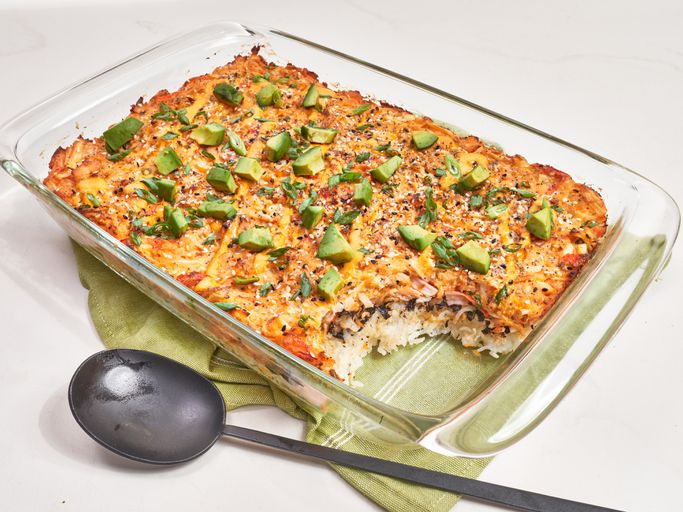

The Odin Project - Mighty Recipes

Salmon Sushi Bake
This sushi bake is a creamy, layered casserole of sushi rice with a creamy salmon filling and roasted seaweed topped with avocado for a fun twist on sushi night!
Prep Time:
20 mins
Cook Time:
35 mins
Additional Time:
15 mins
Total Time:
1 hr 10 mins
Servings:
8
Ingredients
- 1 ½ pounds salmon filet
- 1 ½ teaspoons kosher salt, divided
- 1/4 teaspoon freshly ground black pepper
- 1/2 teaspoon lemon pepper
- 1/4 teaspoon garlic powder
- 1/4 teaspoon paprika
- 2 teaspoons olive oil
- 2 cups sushi rice, rinsed
- 2 ¾ cups water
- 2 teaspoons rice vinegar
- 8 ounces imitation crab, shredded and chopped
- 8 ounces cream cheese, softened
- 1 cup kewpie mayonnaise, divided
- 3 tablespoons Sriracha, plus more to taste, divided
- 2 teaspoons soy sauce
- 3 large sheets nori (roasted seaweed)
- 2 teaspoons furikake (optional)
- 2 teaspoons everything bagel seasoning
- 2 teaspoons lime juice
- 2 sliced green onions, or more to taste
- 1 avocado - peeled, pitted, and diced
Direction
- Preheat the oven to 450 degrees F (230 degrees C). Line a baking sheet with parchment or foil.
- Place salmon on the baking sheet; sprinkle with 1/2 teaspoon salt, pepper, lemon pepper, garlic powder, and paprika. Drizzle oil over salmon.
- Bake in the preheated oven until salmon just starts to flake easily with a fork, 10 to 12 minutes. Let cool slightly before breaking up into small pieces. Reduce oven temperature to 400 degrees F (200 degrees C).
- Meanwhile, combine rice, water, and remaining salt in a sauce pan. Bring to a boil, stir once, reduce heat to low, and cover. Cook until liquid is absorbed and rice is tender, 12 to 14 minutes. Transfer to a large bowl and fluff with a fork. Stir in rice vinegar and let cool.
- When salmon is cooled, add it to a bowl with crab, cream cheese, 1/2 cup mayonnaise, 1 ½ tablespoons Sriracha, and soy sauce, and stir to combine.
- Lightly grease a 9x13-inch baking dish; add rice and press into an even layer. Crush nori sheets over rice and sprinkle with furikake. Spread salmon mixture over seaweed; sprinkle evenly with everything seasoning.
- Bake at 400 degrees F (200 degrees C) until browned around the edges, about 25 minutes.
- Stir remaining 1/2 cup mayonnaise, remaining 1 ½ tablespoons Sriracha, and lime juice together. Drizzle over casserole before serving; top with green onions and avocado.
Go back to Homepage
© 2026 The Odin Project | Mighty Recipes by TAMP87_Dev